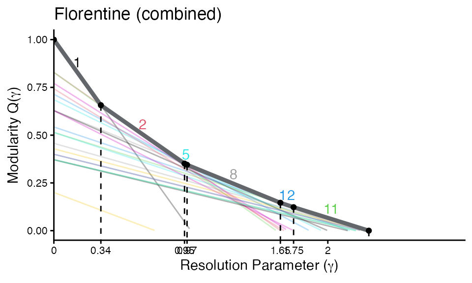
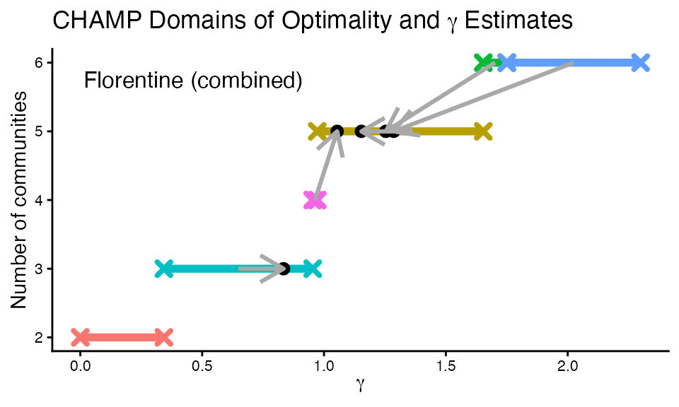

CHAMP.Rmd
library(ideanet)
#> Loading required package: igraphdataideanet provides a set of tools for community detection
using iterative maps on the CHAMP set. These tools help identify
community partitions across different resolution parameters, focusing on
their domain of optimality and self-consistency within a specific block
model. This pipeline includes three core functions for finding and
processing communities in undirected networks, described in this
vignette:
get_partitions collects a set of community detection
partitions from multiple calls to the
igraph::cluster_leiden method to optimize modularity,
,
at various values of the resolution parameter,
;
CHAMP post-processes the output of
get_partitions to identify the subset of partitions that
are somewhere optimal in the space of
values, as described in Weir et al. (2017); and
get_CHAMP_map computes the iterative map defined by
Newman (2016) through the identified equivalence between modularity
optimization and inference on the degree-corrected planted partition
stochastic block model, restricted to the CHAMP set as described by
Gibson & Mucha (2022).
That is, CHAMP takes in a set of community structure partitions, where each partition is a different assignment of nodes into communities, and post-processes this set of partitions to identify which partition is optimal (relative to the input set of partitions, in the modularity sense) at each value of the resolution parameter . By doing so, CHAMP helps users be sure they select community structures that are somewhere optimal in the space of values, and highlights partitions that have wide domains of optimality. The iterative map is then run on this restricted “CHAMP set” of somewhere-optimal partitions, highlighting an even smaller number of partitions that are fixed points of the iterative map (that is, they are self-consistent in the sense of the equivalence found by Newman, 2016).
Note that in most cases the first step, get_partitions,
which is simply a wrapper to multiple calls of
igraph::cluster_leiden and to comm_detect,
will be the most computationally intensive step of this pipeline.
Neither CHAMP nor the iterative map find community structures
themselves; rather, they are tools to highlight a subset of the
partitions input to CHAMP. Generally, the more completely one identifies
the possible input set of partitions, the better the results will be
from CHAMP and the iterative map. It is important to emphasize that
CHAMP and the iterative map are completely deterministic after the input
set of partitions has been defined by get_partitions; that
is, all of the pseudo-stochasticity from the use of community detection
heuristics in this pipeline is in obtaining the input set of partitions
in get_partitions. The quality of the results from CHAMP
and the iterative map are inherently limited by the quality of the input
set of partitions, and the optimality of one partition over another
identified by CHAMP in the second step of this pipeline is only relative
to the set input to CHAMP. Note also that one could add other partitions
defined by hand or obtained by other algorithms, as long as they are
formatted consistent with the list of partitions output by
get_partitions. Finally, we stress that all of the
calculations in CHAMP and the iterative map are based on modularity as
extended with a resolution parameter, while other objective functions
may be preferable in different settings.
Keep in mind that, at the end of the day, this pipeline — combining
modularity optimization with a resolution parameter, the algorithmic
heuristics for this optimization, the CHAMP post-processing, and the
equivalence with inference on the degree-corrected planted partition
model — is just one framework for community detection, identifying
appropriate resolution parameters for performing modularity-based
unsupervised clustering on network data. In many settings, the
communities with large domains of optimality identified by
CHAMP and the partitions that are fixed points found by
get_CHAMP_map will have better overall properties than some
other community labels. However, like unsupervised clustering of any
other data, there can be multiple good ways to cluster data and there is
no single answer that is best in all settings (see, for example, Peel et
al., 2017).
These functions, as part of the broader IDEANet project, are supported by the National Science Foundation as part of the Human Networks and Data Science - Infrastructure program (BCS-2024271 and BCS-2140024).
If you use these functions in your work, please cite
Note that our current R implementation of this pipeline does not handle multilayer networks. The Python implementation at https://github.com/ragibson/ModularityPruning combines the multilayer capabilities of CHAMP with the generalization of Newman’s equivalence to multilayer networks derived by Pamfil et al. (2019). An R implementation of this multilayer framework is in development. We also assume that networks are undirected, though possibly weighted (but see the note at the end of Example 2 below).
In addition to this vignette, we highly recommend you look at the CHAMP_karate vignette, which demonstrates this pipeline on the karate club network, and the CHAMP_football vignette, which goes into an even deeper dive on the network of Division I-A college football games from the Fall 2000 season, demonstrating how this pipeline helps uncover the conference structure.
We demonstrate the 3 main steps of the pipeline with the florentine
network igraph object that combines both types of relations
between families in Florence, as built in the netwrite
vignette.
nw_flor <- netwrite(nodelist = florentine_nodes,
node_id = "id",
i_elements = florentine_edges$source,
j_elements = florentine_edges$target,
type = florentine_edges$type,
directed = FALSE,
net_name = "florentine",
output = "graph")In the interest of simplicity, we will not visualize sociograms directly in this vignette. However, if you are interested in looking at the general structure of the networks used here, we provide code for doing so and encourage you to paste it in your R console:
igraph::plot.igraph(nw_flor$florentine)The whole idea of CHAMP is that it post-processes community structure
partitions that you’ve already taken the time to compute. It is not a
community finding algorithm itself; rather, it enforces the modularity
(with resolution parameter) objective function back onto the (possibly
very many) partitions that you have already computed. So to use this we
first need to have a set of partitions, which we will obtain here with
the get_partitions function. Under the hood, it runs
cluster_leiden from igraph at various
resolution parameter values, along with the routines in
comm_detect, filters out the duplicate partitions, and then
formats the results appropriately in the partitions list
for what comes next. Because Leiden and the other routines in
comm_detect are pseudo-stochastic heuristics, we set the
random seed as part of the function call to ensure reproducible
results.
Arguments for get_partitions():
network: igraph object to analyzegamma_range: range of
values to use as input for cluster_leiden. Default is a
range of 0 to 3.n_runs: number of times that the Leiden algorithm will
be executed at different
values. Defaults to 100.n_iterations: the number of optimization runs passed to
cluster_leiden. Defaults to 2.seed: set a seed for reproducible partitions.add_comm_detect: Boolean to decide whether to also call
the clustering algorithms included in (default = TRUE).
Alternatively, the output of can be provided directly here.
flor_partitions <- get_partitions(nw_flor$florentine, n_runs = 500, seed = 4781)
#> Warning in comm_detect(network, plots = FALSE): Calling cluster_edge_betweenness with reciprocal weights, which may affect selected membership vector incorrectly.
#> Warning in igraph::cluster_edge_betweenness(g_undir, weights = igraph::E(g_undir)$r_weight, : Membership vector will be selected based on the highest modularity score.
#> Source: community/edge_betweenness.c:504
#>
#> [1] "21 unique partitions generated between cluster_leiden() and comm_detect()"Note that setting n_runs = 500 is an insanely overkill
number of times to call Leiden for this small network, and indeed we see
the resulting report that we only obtain 21 unique partitions. But this
call also probably only took a couple seconds at most (depending on your
hardware), and since the quality of the deterministic calculations that
follow in the next two steps relies on finding good partitions in
get_partitions, it is generally good practice to be willing
to spend a few compute cycles in this step.
The partitions list returned by
get_partitions (assigned to flor_partitions
here) includes the counts of the numbers of times that each unique
partition was obtained by these pseudo-heuristic algorithms.
unlist(flor_partitions$count)
#> [1] 46 100 1 2 11 1 1 90 1 1 114 34 5 1 24 1 13 32 8
#> [20] 19 7
sum(unlist(flor_partitions$count))
#> [1] 512You can see in the above that some partitions show up many times —
like the 2nd, 8th and 11th in the list — while a few were only found
once. You can also see that there are a total of 512 results
(n_runs = 500 calls to cluster_leiden at
different resolution parameters plus the 12 clustering results obtained
in comm_detect) that led to these 21 unique partitions. You
can directly query different unique partitions inside the list as
follows.
flor_partitions$partitions[[2]]
#> IGRAPH clustering leiden, groups: 3, mod: NA
#> + groups:
#> $`1`
#> [1] "0" "1" "2" "5" "8" "9" "12" "13" "15"
#>
#> $`2`
#> [1] "3" "4" "6" "7" "10" "14"
#>
#> $`3`
#> [1] "11"
#>
flor_partitions$partitions[[10]]
#> IGRAPH clustering leiden_cpm_membership, groups: 5, mod: NA
#> + groups:
#> $`1`
#> [1] "0"
#>
#> $`2`
#> [1] "1" "5"
#>
#> $`3`
#> [1] "2" "3" "4" "6" "7" "10" "14"
#>
#> $`4`
#> + ... omitted several groups/verticesYou can see that the information about each of these partitions
includes a label about which clustering routine identified the
partition. In particular, you can see that the 10th partition is labeled
“leiden_cpm_membership”, indicating which routine called by
comm_detect found this, while the 2nd partition was
obtained from one of the cluster_leiden calls. Of course,
as we saw above, the 2nd partition was obtained many times, and we do
not distinguish here whether any of those copies of this partition were
found by one of the routines in comm_detect; that is, the
“leiden” label here merely means that at least one of the copies of this
partition was found by cluster_leiden. In contrast, the
“leiden_cpm_membership” label on the 10th partition means it was not
found by any of our many cluster_leiden calls at different
resolution parameter values.
You might also reasonably wonder about what resolution parameter
values were involved in finding some of these partitions. The range of
these gamma values is included in the list.
However, importantly, the CHAMP framework does not actually depend on the resolution parameter value used in the algorithm that found a partition, so we do not store this information. Instead, in the next step CHAMP will take all of the unique partitions that we have found and tell us which of these partitions is best at each resolution parameter.
Next, we run the CHAMP algorithm on the resulting
partitions, and plot results to visualize the domains of optimality in
the resolution parameter space for each somewhere-optimal partition.
Arguments for CHAMP():
network: igraph object to analyze.partitions: partitions object generated from
get_partitions.plottitle: optionally, a title for the output plot.
Null by default.plots: Boolean to decide whether to generate
corresponding figure. TRUE by default.
flor_partitions <- CHAMP(nw_flor$florentine, flor_partitions,
plottitle = "Florentine (combined)")
#> [1] "6 partitions in the CHAMP set (i.e., on the upper envelope of Q v. gamma)"
In the above plot generated by CHAMP, each of the 21
unique partitions returned by get_partitions is represented
by a line giving its values of
,
the modularity of the partition as a function of resolution parameter
.
CHAMP then identifies which of these lines ever appear on
the upper envelope of
,
that is, which of the corresponding partitions are somewhere optimal in
the space of
values. Notably, CHAMP only finds 6 somewhere-optimal
partitions here. The plot annotates the line segments with numbers
indexing which of the input partitions are optimal (relative to the
input set) along that line segment, as well as the
values where lines intersect on the upper envelope (that is, where which
partition is optimal changes). As a technical sidebar, we note that our
CHAMP implementation here only considers partitions that
are optimal with
,
cutting off the line segment for partition 11 at the point where it
crosses
and ignoring higher resolution parameter values.
CHAMP updates the partitions list with the
generated CHAMPfigure plot shown above and a
CHAMPsummary that provides essential information about the
6 somewhere-optimal partitions found here.
print(flor_partitions$CHAMPsummary)| starting_gamma | ending_gamma | partition_num | num_communities | next_gamma | next_partition_num | next_num_communities | segment_length | gamma_range |
|---|---|---|---|---|---|---|---|---|
| 0.0000000 | 0.3431373 | 1 | 2 | NA | NA | NA | 0.4852694 | 0.3431373 |
| 0.3431373 | 0.9536785 | 2 | 3 | NA | NA | NA | 0.6827173 | 0.6105412 |
| 0.9536785 | 0.9722222 | 5 | 4 | NA | NA | NA | 0.0196505 | 0.0185437 |
| 0.9722222 | 1.6535433 | 8 | 5 | NA | NA | NA | 0.7097419 | 0.6813211 |
| 1.6535433 | 1.7500000 | 12 | 6 | NA | NA | NA | 0.0991958 | 0.0964567 |
| 1.7500000 | 2.2992701 | 11 | 6 | NA | NA | NA | 0.5628423 | 0.5492701 |
In particular, the
flor_partitions$CHAMPsummary$partition_num column and the
associated numerical annotations on the figure correspond to the list of
partitions in flor_partitions$partitions. For example, the
partition that straddles the default
resolution parameter here, which also happens to have a large
gamma_range and segment_length (the length of
the corresponding line segment on the upper envelope of Q v.
in the figure) is the 5-community partition with
partition_num 8 here. Having thus highlighted this
partition, we can directly examine it more closely.
flor_partitions$partitions[[8]]
#> IGRAPH clustering leiden, groups: 5, mod: NA
#> + groups:
#> $`1`
#> [1] "0" "8" "9" "12" "13" "15"
#>
#> $`2`
#> [1] "1" "5"
#>
#> $`3`
#> [1] "2" "4" "10" "14"
#>
#> $`4`
#> + ... omitted several groups/vertices
igraph::membership(flor_partitions$partitions[[8]])
#> 0 1 2 3 4 5 6 7 8 9 10 11 12 13 14 15
#> 1 2 3 4 3 2 4 4 1 1 3 5 1 1 3 1
igraph::plot.igraph(nw_flor$florentine,mark.groups = flor_partitions$partitions[[8]])Running CHAMP selects out only the partitions that are
optimal at some
and, in so doing, allows the user to see which partitions are optimal
over wider ranges of the resolution parameter. In particular, we expect
that there might be multiple partitions of interest, and that
CHAMP will help the user focus their attention down onto a
smaller number of possible candidate partitions that have large ranges
of optimality in
.
We emphasize that CHAMP is deterministic given an input
set of partitions, identifying which of those partitions is optimal at
some
;
but the set of partitions obtained in the get_partitions
step depends on the random seed, the number of runs, and the parameters
passed to cluster_leiden. In practice it loosely appears
that the partitions that CHAMP finds to be optimal over
wider ranges of the resolution parameter are more easily obtained by
fewer runs in get_partitions; but it may be interesting in
future work to explore some of these computational details including how
many runs in get_partitions it takes to obtain relatively
robust CHAMP results.
In the current example, with only 6 partitions remaining in “the CHAMP set”, and only some of those with larger ranges of optimality, a user might reasonably stop here with these results and proceed to study the resulting communities in greater detail. But in many applications, there may still be many somewhere-optimal partitions in the CHAMP set with comparable gamma range and/or segment length, and the user may be looking for a way to further focus their attention onto a smaller number of partitions.
The get_CHAMP_map function uses the equivalence of
modularity optimization with inference on a degree-corrected planted
partition model, as discovered by Newman (2016), to define the
corresponding iterative map restricted to the partitions in the CHAMP
set, as defined by Gibson & Mucha (2022). In this iterative map,
each partition in the set points to an “estimated
”
value consistent with the equivalence, and thereby points to whichever
partition is optimal at that estimated
value. A fixed point of the map, that is, a partition that points to
itself (it points to an estimated
in its own domain of optimality), is thus self consistent in the sense
of this equivalence, and becomes a natural partition for further
attention.
Arguments for get_CHAMP_map():
network: igraph object to analyze.partitions: partitions object generated from
get_partitions.plottitle: optionally, a title for the output plot.
Null by default.shiny: Boolean indicating whether
get_CHAMP_map is being called within
ideanetViz. If TRUE,
get_CHAMP_map returns an output data frame that
ideanetViz uses for visualization.plots: Boolean to decide whether to generate
corresponding figure. TRUE by default.
flor_partitions <- get_CHAMP_map(nw_flor$florentine, flor_partitions,
plotlabel = "Florentine (combined)")
#> [1] "Partition # 2 (with 3 communities) is a fixed point of the iterative map"
#> [1] "Partition # 8 (with 5 communities) is a fixed point of the iterative map"
The above figure re-visualizes each of the 6 partitions in the CHAMP
set (that is, the somewhere-optimal partitions) as a line segment
indicating the number of communities in the partition (on the vertical
axis) versus its domain of optimality in
(on the horizontal axis). The arrows in the figure visualize the
iterative map on the CHAMP set, directed from the middle of each line
segment to the “estimated
”
value associated with that partition and, thus, the partition that is
optimal at that
.
These values are tabulated in the now updated
flor_partitions$CHAMPsummary.
print(flor_partitions$CHAMPsummary)| starting_gamma | ending_gamma | partition_num | num_communities | next_gamma | next_partition_num | next_num_communities | segment_length | gamma_range |
|---|---|---|---|---|---|---|---|---|
| 0.0000000 | 0.3431373 | 1 | 2 | NA | NA | NA | 0.4852694 | 0.3431373 |
| 0.3431373 | 0.9536785 | 2 | 3 | 0.8340116 | 2 | 3 | 0.6827173 | 0.6105412 |
| 0.9536785 | 0.9722222 | 5 | 4 | 1.0539077 | 8 | 5 | 0.0196505 | 0.0185437 |
| 0.9722222 | 1.6535433 | 8 | 5 | 1.1534626 | 8 | 5 | 0.7097419 | 0.6813211 |
| 1.6535433 | 1.7500000 | 12 | 6 | 1.2535777 | 8 | 5 | 0.0991958 | 0.0964567 |
| 1.7500000 | 2.2992701 | 11 | 6 | 1.2858669 | 8 | 5 | 0.5628423 | 0.5492701 |
Looking at the above figure and table, at the bottom of the table we
see that the 6-community partition with partition_num 11
maps to the estimated
value listed under next_gamma, where the 5-community
partition is optimal (that is, the bottom row of the table lists
next_partition_num 8 and next_num_communities
5). Meanwhile, note that the next_gamma value listed for
partition_num 5 is between the starting_gamma
and ending_gamma values for partition_num 8,
whereas the next_gamma and next_partition_num
for partition_num 8 maps to itself. That is,
partition_num 8 is a fixed point of the iterative map on
the CHAMP set. We see that partition_num 2, with 3
communities, is also a fixed point, mapping to itself.
Note that the “fixed point” message output from
get_CHAMP_map identifies both partition_num 2
and partition_num 8 as the two partitions that each point
to themselves. If you happen to miss this message in your use, the
partition_num of each fixed point is also stored in a
list.
print(flor_partitions$fixedpoints)
#> [[1]]
#> [1] 2
#>
#> [[2]]
#> [1] 8As an aside, note the NA values in the row corresponding to the 2-community partition. This partition is unlike the others here in that it doesn’t map to anywhere, because this 2-community partition is a trivial solution in that it simply identifies the 2 components of the graph (disconnected from one another) without any further community structure within those components, and in the absence of any further community structure it has no associated resolution. This trivial partition where all nodes in each connected component are together in a community cannot be mapped to any other partition (hence the NA values). However, it is theoretically possible in the pipeline for other partitions to map to values where this trivial partition is optimal (but it does not happen in the present examples).
As the only fixed points of the map on the CHAMP set,
partition_num 2 and partition_num 8 are of
special interest to us. The fact that partition_num 8
happens to be the same as the optimal partition at the default
resolution parameter
is a special feature of this simple example network — in other examples,
the fixed points of the CHAMP map may occur at other resolution
parameter values.
Again, there may be other good partitions in different senses that
are not highlighted by these procedures, but we expect there are many
cases where this framework — gathering partitions, running
CHAMP, and picking out the fixed point of the iterative map
on the CHAMP set — easily and efficiently highlights partitions of
interest.
Girvan, M., and M. E. J. Newman. “Community Structure in Social and Biological Networks.” Proceedings of the National Academy of Sciences of the United States of America 99, no. 12 (June 11, 2002): 7821–26. https://doi.org/10.1073/pnas.122653799.
Gibson, Ryan A., and Peter J. Mucha. 2022. “Finite-State Parameter Space Maps for Pruning Partitions in Modularity-Based Community Detection.” Scientific Reports 12 (1): 15928. https://doi.org/10.1038/s41598-022-20142-6.
Newman, M. E. J. “Equivalence between Modularity Optimization and Maximum Likelihood Methods for Community Detection.” Physical Review E 94, no. 5 (November 22, 2016): 052315. https://doi.org/10.1103/PhysRevE.94.052315.
Pamfil, A. Roxana., Sam D. Howison, Renaud. Lambiotte, and Mason A. Porter. “Relating Modularity Maximization and Stochastic Block Models in Multilayer Networks.” SIAM Journal on Mathematics of Data Science, January 1, 2019, 667–98. https://doi.org/10.1137/18M1231304.
Peel, Leto, Daniel B. Larremore, and Aaron Clauset. 2017. “The Ground Truth about Metadata and Community Detection in Networks.” Science Advances 3 (5): e1602548. https://doi.org/10.1126/sciadv.1602548.
Weir, William H., Scott Emmons, Ryan Gibson, Dane Taylor, and Peter J. Mucha. 2017. “Post-Processing Partitions to Identify Domains of Modularity Optimization.” Algorithms 10 (3): 93. https://doi.org/10.3390/a10030093.